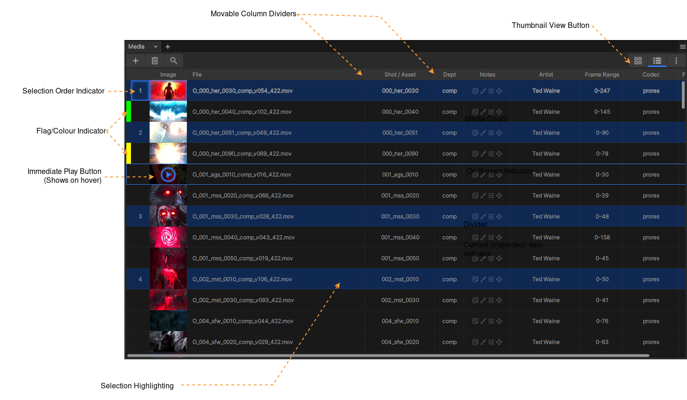
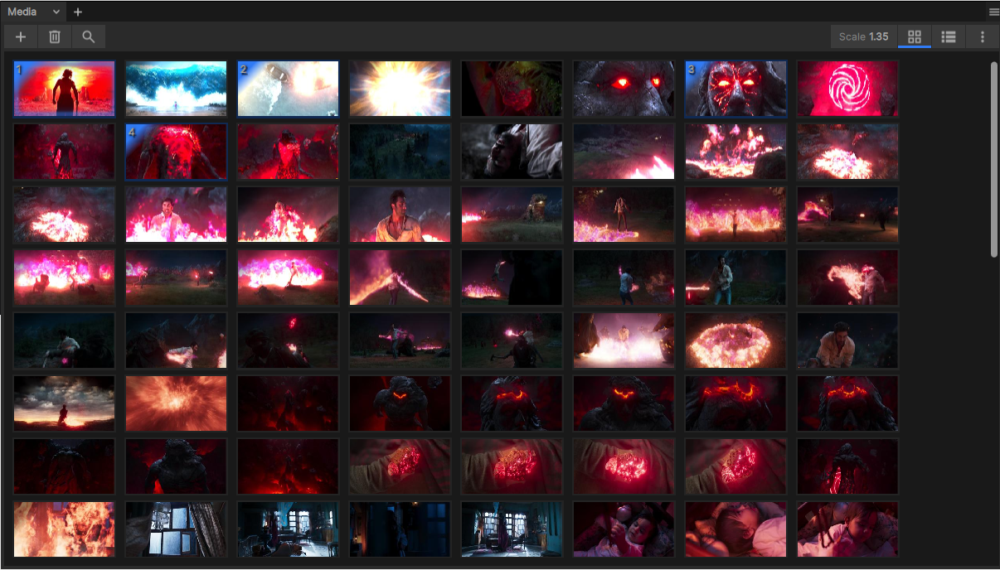
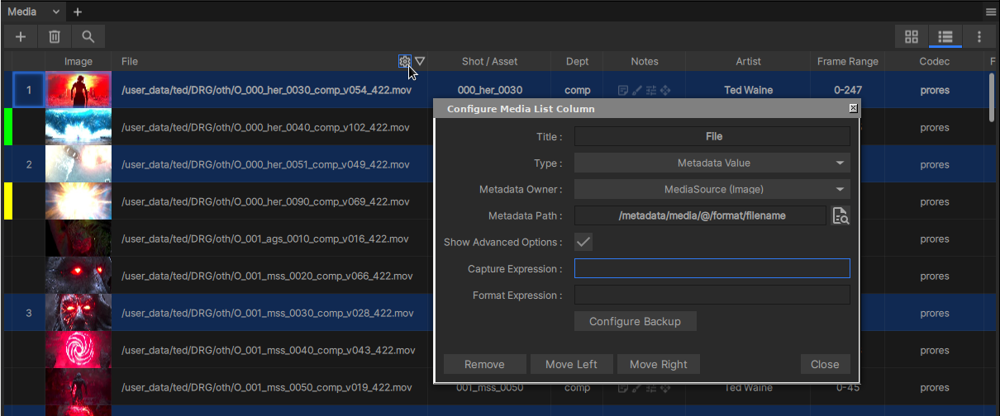

The Media List Panel

The Media List in ‘List’ mode.
Media List は、現在 inspected (インスペクト対象) になっている Playlist、Subset、Contact Sheet、または Sequence 内のメディアの順序付きリストを表示するスクロール可能なウィンドウです。inspected と viewed のプレイリスト項目の違いに関する詳細については、Inspecting playlist media を参照してください。
Media List には、panels の右上にあるボタンで切り替え可能な 2 つの表示オプションがあります。リストモード (上の図) またはサムネイルモード (下の図) です。

The Media List in ‘Thumbnail’ mode.
Media Selection and Viewing
Media List 内の任意のメディア項目を 1 回クリックすると、それが選択されます (すでに複数選択の一部になっていない場合)。Playlist または Subset の場合、選択したメディアによって xSTUDIO Viewport で再生されるメディアが決定されます。ただし、Compare Modes や Sequence では、選択は再生されるメディアに影響しません。viewed (表示対象) の Playlist/Subset/Contact Sheet/Sequence が選択したものと異なっていても、Media List から特定のメディア項目を表示したい場合は、その項目を ダブルクリック することで、表示対象の Playlist または Subset が選択した Playlist または Subset に強制的に切り替わります。
また、複数のメディアを選択することも可能であり、これは Playhead の比較モードを活用するために必要となります：
複数選択を行うには、CTRL キーまたは SHIFT キーを押しながらメディア項目をクリックします。
項目を選択した順序が登録され、メディアビューの左端の列にインジケーターとして示されます。
すでに選択されている メニア項目をクリックした場合、選択状態は変わりませんが、クリックしたメディアが Viewport で再生されます (別のプレイリストを表示していない場合)。
選択を解除するには、選択されていないメディア項目をクリックするか、「CTRL+D」のホットキーを使用します。
プレイリスト内のすべての項目を選択するには、「CTRL+A」のホットキーを使用します。
Note
xSTUDIO の Compare Modes を使用するには、複数選択が必要です。
Configuring Media List Columns
Media List のリストモードでは、メタデータが列 (カラム) に表示され、これらは完全にカスタマイズ可能です。列の追加、削除、並べ替えができるほか、表示するメタデータを選択することもできます。また、メタデータ文字列の一部を抽出して表示するための正規表現を設定することも可能です。

The Media List configuration dialog.
Media List の列を構成するには：
列ヘッダーのいずれかの上にマウスをホバーします。列ヘッダーに cog (歯車) アイコンが表示されます。これをクリックして構成ダイアログを開きます。
Remove/Move Left/Move Right ボタンを使用して、列を削除または移動します。
列のタイトルを設定します。
ドロップダウンから列のインジケーターのタイプを選択します。固定された目的を持つ「標準」タイプを選ぶか、または Metadata Value を選択します。
- Metadata Value を選択した場合は、次に Metadata Owner ドロップダウンでメタデータのソースをどこにするか選択します。
Media - Media 項目は Media Source のコンテナであり、メタデータを追加する自動スクリプトが設定されている場合にのみメタデータを持ちます。 miniature は通常、パイプライン統合システムがセットアップされているポストプロダクションスタジオで作業するユーザーにのみ該当します。詳細については Pipeline Integration を参照してください。スタジオ外で作業する個人のユーザーの場合、ここでの Media オプションは空になり、役に立ちません。
Media Source (Image) - これを選択すると、Media 項目の 画像 ソースに関連するメタデータ値を検索できるようになります。
Media Source (Audio) - これを選択すると、Media 項目の 音声 ソースに関連するメタデータ値を検索できるようになります。
- 次に、メタデータ辞書からフィールドを選択するために Metadata Path を設定する必要があります。
Media Source を起源とするメタデータは、本質的にメディアファイルから抽出されたメタデータの辞書です。たとえば、EXR 画像は画像ヘッダーに多くのデータを格納できます。xSTUDIO はこのデータを読み取り、Media Source のメタデータとして保存します。
メタデータフィールドを選択する最も簡単な方法は、対応するボックスの右側にあるドキュメント拡大鏡ボタンをクリックすることです。
新しいウィンドウが開き、Media Source のすべてのメタデータフィールドがリスト表示されます。
メタデータフィールドのリスト内のいずれかの行をクリックして、Media List の列用に選択します。
- (高度な設定) 正規表現を使用してメタデータフィールド値とマッチングを行い、完全なファイルパスのような長い文字列から有用なセクションを抽出します。
正規表現は強力ですが、使いこなすのが面倒です！馴染みがない場合は、インターネットで調べて詳細を学んでください。
たとえば、ファイルパスのメタデータ値を選択したとします。ファイルパスが /Users/joe/media/ARX/001_prd_0200/renders/comp/C_001_prd_0200_comp_v001.mp4 である場合、
視覚的に、ファイルパス全体を表示することは有用ではありません。単に C_001_prd_0200_comp_v001 だけを表示したい場合があります。
これを行うには、正規表現を次のように設定します：.+/([_a-zA-Z0-9]+_v[0-9]+).mp4
And we set the format expression to $1 to show the 1st captured string.
Configuring Media List Walkthrough
この短い動画では、Media List を分かりやすくし、情報を追加するために、正規表現とメタデータフィールドを使用する方法を実演しています。